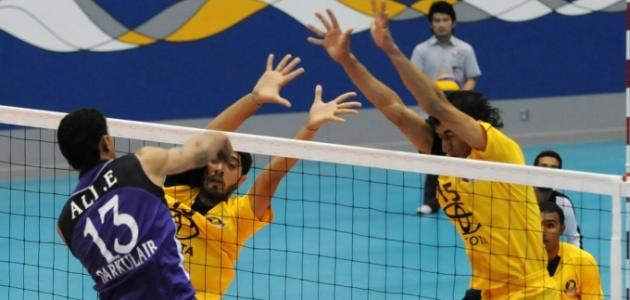
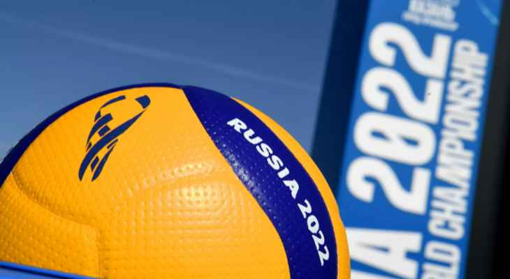
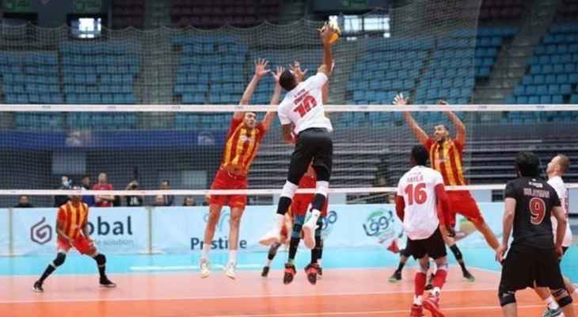
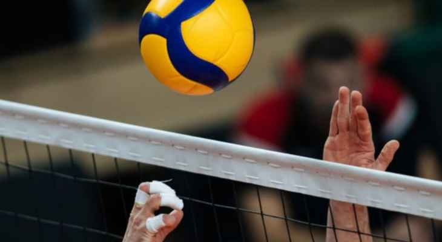

Volleyball is one of the world's most popular sports.
Two teams play, separated by a high net. The team must hit the ball above the ball. Each team has three chances to hit the ball above the net. A team's point is calculated when the opponent's ground ball, globe, globe, globe, globe, or globe hits the opponent.
The first country to play the game after the United States of America was Canada in the year 1900.
Now this sport is one of the most popular sports in Brazil, read the countries of Europe, especially Italy, the Netherlands and Serbia, in addition to Russia and some countries in the continent of Asia..
The Federation was founded in 1947 in Paris (France). Only 14 countries participated in the founding, and Paul Libaud was the first president of the federation.
In 1964, the International Olympic Committee accepted volleyball as an Olympic competition. Over time, the number of national associations affiliated with the International Federation increased to 89. Later in 1969, the “Volleyball World Cup” competition was demarcated. It became a ticket to qualify for the 1991 Olympics.
After Mr. Libaud withdrew, the Mexican Rubén Acosta was elected as the new president in 1984, and the headquarters of the Federation moved from Paris (France) to Lausanne (Switzerland). The level of volleyball promotion at the global level intensified, and annual competitions for men and women were introduced (World League in 1990 and Grand Prix in 1993).
In 2020, the federation's membership reached 222 national federations.
A volleyball match is played with two teams, each consisting of six main players, distributed on the defense and attack lines, with three players per line.
A single player is not allowed to hit the ball twice in a row, and an interception of the ball is not considered if the opposing team's attack is blocked from these hits.
The ball may be hit from outside the net while it is in the air or while it is being served.
A point is awarded if the ball touches the side lines of the playing court.
A point is not awarded if the ball touches anywhere outside the playing field.
Players of one team can switch places on the playing court after the ball has been served.
A volleyball player is not allowed to catch, carry or throw the ball directly in any way
The International Volleyball Federation refuses to move the World Championships from Russia
Qatar-Bahraini final in the Arab volleyball
The Volleyball Federation sets the final program for the Lebanese Women's Championship for the 2021-2022 season
